このレポートについて
目的: 衛星画像の土地被覆分類（Land Use / Land Cover Classification）において、手法の複雑さを段階的に上げたとき、分類精度がどう変わるかを検証する。
具体的には、数式ベースの単純なルール（L1）→ 学習済みモデルの特徴量利用（L2）→ モデル全体のファインチューニング（L3）という3段階で精度を比較し、各手法のコスト対効果と実務への適用可能性を評価した。
データセット: EuroSAT
| 項目 | 内容 |
|---|---|
| データ名 | EuroSAT（Sentinel-2 衛星画像ベンチマーク） |
| 画像数 | 27,000枚（各クラス 2,000〜3,000枚） |
| 画像サイズ | 64×64ピクセル（10m解像度、約640m×640m の地表をカバー） |
| バンド数 | 13バンド（可視光〜短波赤外）。ただし今回はRGB 3バンドのみ使用 |
| クラス数 | 10クラス（AnnualCrop, Forest, HerbaceousVegetation, Highway, Industrial, Pasture, PermanentCrop, Residential, River, SeaLake） |
| データ分割 | Train 80% (21,600枚) / Test 20% (5,400枚)、random_state=42 で固定 |
| 地域 | ヨーロッパ各地（Sentinel-2 の公開データから切り出し） |
実行環境
| 項目 | 内容 |
|---|---|
| 実行環境 | Google Colab Pro（GPU: T4 / A100） |
| Python | 3.10 |
| 主要ライブラリ | PyTorch 2.x, torchvision, scikit-learn, numpy, matplotlib |
| 事前学習モデル | ResNet50（ImageNet-1K で事前学習済み）、ViT-Tiny（同） |
評価指標
- Accuracy（精度）: 正しく分類できた画像の割合。全体の性能を示す最も基本的な指標
- 3クラス精度: 10クラスを Vegetation / Water / Built-up の3つに集約して評価（L1との公平な比較用）
- 10クラス精度: 10クラスそれぞれを区別する精度（L2/L3の本来の評価）
- 混同行列: どのクラスをどのクラスに間違えたかの詳細
- F1スコア: Precision（適合率）とRecall（再現率）の調和平均。クラスごとの性能評価に使用
比較する3手法
| 手法 | 概要 | 計算コスト |
|---|---|---|
| L1: 数式ベース | NDVI/NDWI/NDBI の閾値ルールで3クラス分類。AIモデルなし | 数秒、GPU不要 |
| L2: 事前学習モデル特徴量 | ResNet50（凍結）で特徴抽出 → ロジスティック回帰で10クラス分類 | 数分、GPU推奨 |
| L3: ファインチューニング | ResNet50の全層を衛星画像で再学習して10クラス分類 | 30分、GPU必須 |
結果サマリ
Day 1（Task 1-1〜1-5）の全結果を統合し、何をどのコードでやったか → どんな結果が出たか → なぜそうなるか → 実務への示唆を1画面で追える内部向けレポートにまとめた。
L1 (Index Threshold)
64.4%
3クラス
L2 (ResNet50 + LogReg)
95.7%
10クラス
L3 (ResNet50 Full FT)
98.5%
10クラス
衛星データの本質
- Sentinel-2は「写真」を撮るカメラではなく、13バンドの反射率を計測するセンサー。
- 今回のL2/L3はRGB 3バンド（Band 4/3/2）のみ利用し、元データの23%（3/13）しか使っていない。
- 残り10バンド（近赤外・短波赤外など）を使う余地があり、特に植生系のクラス分離で改善余地がある。
Day 1の5つの学び
学び 1⌄
学習済みモデルを使うだけで L1→L2 で +31.3pt の最大ジャンプ。
学び 2⌄
ファインチューニング（L2→L3）で +2.8pt。追加コストに対して着実な上積み。
学び 3⌄
Head Only (92.4%) は L2 (95.7%) を下回る。凍結特徴 + LogReg の最適化効率が高い。
学び 4⌄
EuroSATのようなきれいなデータでは学習データ50%でも -0.5pt。実務データでは差が拡大しやすい。
学び 5⌄
実務のボトルネックは画像取得ではなくラベル作成コスト（セグメンテーション1枚30分〜1時間）。
Task 1-1: L1 Index Threshold
概要: NDVI/NDWI/NDBI の3指数と閾値ルールだけで 3クラス分類を実施。AIモデルなしのベースラインとして、どこまで分類できるかを確認した。
結果: 3クラス精度 64.4%（Vegetation 98.7%、Water 73.9%、Built-up 0.0%）
目的と手法（指数の意味）
- NDVI = (NIR - Red) / (NIR + Red): 植生活性を強調
- NDWI = (Green - NIR) / (Green + NIR): 水域を強調
- NDBI = (SWIR - NIR) / (SWIR + NIR): 都市域を強調（理論上）
分類ロジック（優先順位）:
- 全件を Vegetation と仮置き
NDWI > -0.18を Water に上書き- 残りで
NDBI > NDVIを Built-up に上書き
コードで何をやったか（要約）
展開する⌄
# 1) データ読み込み
rgb, nir, swir = load_sentinel2_bands(...)
# 2) 指数計算
ndvi = (nir - red) / (nir + red + 1e-8)
ndwi = (green - nir) / (green + nir + 1e-8)
ndbi = (swir - nir) / (swir + nir + 1e-8)
# 3) 閾値探索（NDWI）
for th in np.arange(-0.20, 0.30, 0.02):
pred = rule_based_predict(ndvi_mean, ndwi_mean, ndbi_mean, th)
score = accuracy(pred, y_true_3)
# 4) 分類と評価
best_th = -0.18
pred = rule_based_predict(..., best_th)
report = confusion_matrix_and_class_accuracy(pred, y_true_3, y_true_10)結果テーブル（3クラス）
| クラス | 正解数 / 全数 | 正解率 |
|---|---|---|
| Vegetation | 13,331 / 13,500 | 98.7% |
| Water | 4,064 / 5,500 | 73.9% |
| Built-up | 2 / 8,000 | 0.0% |
結果テーブル（10クラス詳細）
| 元クラス | 統合先 | 枚数 | 正解率 |
|---|---|---|---|
| Forest | Vegetation | 3000 | 100.0% |
| PermanentCrop | Vegetation | 2500 | 99.9% |
| Pasture | Vegetation | 2000 | 99.8% |
| AnnualCrop | Vegetation | 3000 | 98.8% |
| HerbaceousVegetation | Vegetation | 3000 | 95.8% |
| SeaLake | Water | 3000 | 100.0% |
| River | Water | 2500 | 42.6% |
| Highway | Built-up | 2500 | 0.0% |
| Industrial | Built-up | 2500 | 0.0% |
| Residential | Built-up | 3000 | 0.1% |
指数分布（index_distributions.png）
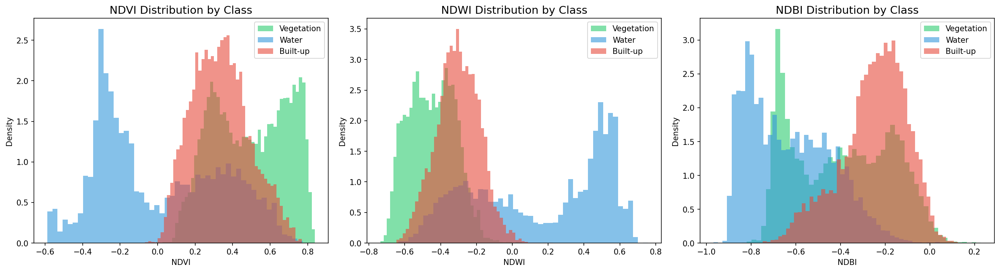
何を見るべきか: NDWIがWaterを比較的分ける一方、NDVI/NDBIでBuilt-upとVegetationが重なる点。
何がわかるか: 閾値分類でBuilt-upが難しいことを学習前に予見できる。
混同行列（L1_confusion_matrix.png）
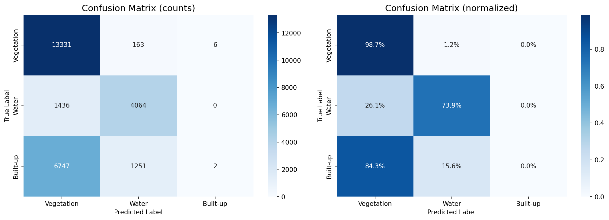
何を見るべきか: Built-up行がどこへ流れているか。
何がわかるか: Built-upの大半がVegetationに流れ、構造的な失敗が確認できる。
ピクセル分類マップ（L1_classification_maps.png）
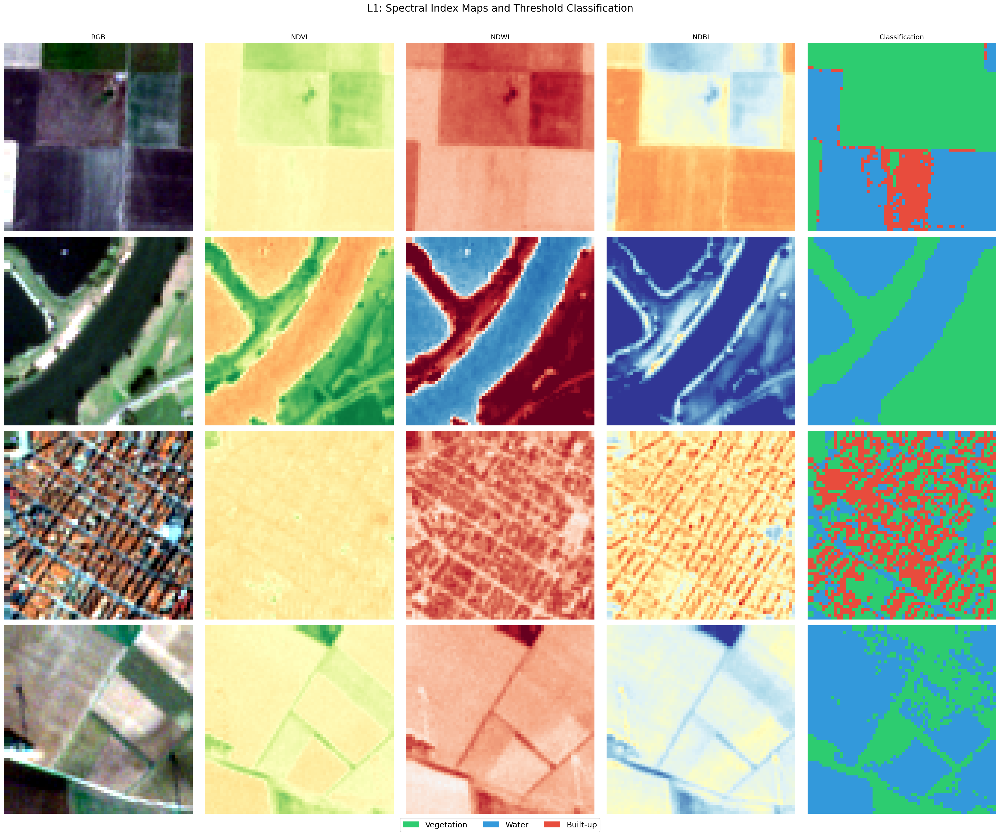
何を見るべきか: River画像で川と周辺植生がどう塗り分けられているか。
何がわかるか: Riverの平均値が植生側へ引っ張られる理由が見える。
3D散布図（L1_3d_scatter.png）
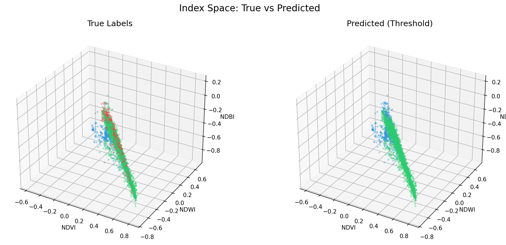
何を見るべきか: Built-upとVegetationの点群重なり。
何がわかるか: 3指数を同時に使っても線形閾値では分離困難である。
10クラスRGBサンプル（eurosat_10classes_rgb.png）
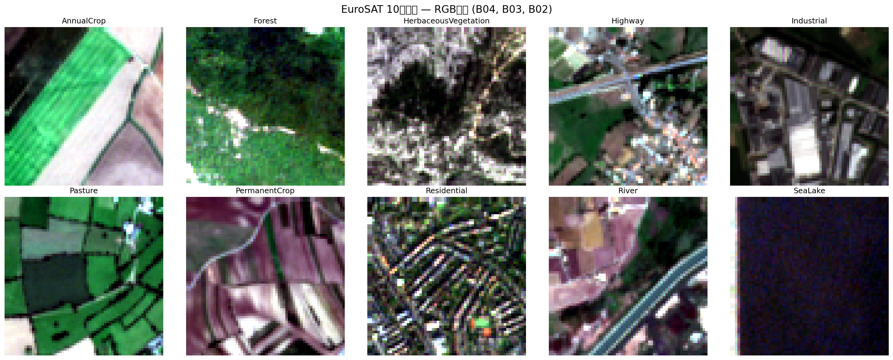
何を見るべきか: 見た目が似るクラス（例: AnnualCropとResidential）。
何がわかるか: 人間目視でも曖昧なペアが誤分類源になる。
考察
- Built-up 0.0%の主因: 都市パッチ内に緑地が多く混在し、画像平均では
NDBI > NDVIがほぼ成立しない。 - River 42.6%の主因: 河川が細く、640mパッチの大半を周辺植生が占めるため平均NDWIが下がる。
- 閾値法は「明確に異なる物質（水 vs 植生）」には有効だが、混在・微差の識別には限界。
L2への接続
Task 1-2: L2 Pretrained Model
概要: ImageNet事前学習済み ResNet50 を特徴抽出器として固定し、抽出された2048次元特徴にロジスティック回帰を学習。
結果: 10クラス 95.7%、3クラス 98.1%
バックボーン + 分類器の構造
| 段階 | 内容 |
|---|---|
| 入力 | 224×224×3 = 150,528個の数値 |
| バックボーン | ResNet50（50層、約2,350万パラメータ） |
| 特徴 | 2,048次元特徴ベクトル |
| 分類器 | LogReg（2,048×10+10 = 20,490パラメータ） |
| 出力 | 10クラス確率（softmax） |
- バックボーンは画像から「意味のある特徴」を圧縮抽出する装置。
- 分類器は2048特徴に重みを掛け、10クラスへ振り分ける。
- L2ではバックボーンを凍結し、分類器のみ学習（転移学習の最小構成）。
コードで何をやったか（要約）
展開する⌄
# 1) ResNet50で特徴抽出（weights=ImageNet）
features_train = backbone(train_images) # (21600, 2048)
features_test = backbone(test_images) # (5400, 2048)
# 2) ロジスティック回帰で10クラス分類
clf = LogisticRegression(max_iter=1000, multi_class='multinomial')
clf.fit(features_train, y_train)
y_pred = clf.predict(features_test)
# 3) 評価
acc10 = accuracy_score(y_test, y_pred)
acc3 = accuracy_score(y_test_3, y_pred_3)10クラス精度
95.7%
3クラス精度
98.1%
L2_confusion_matrix
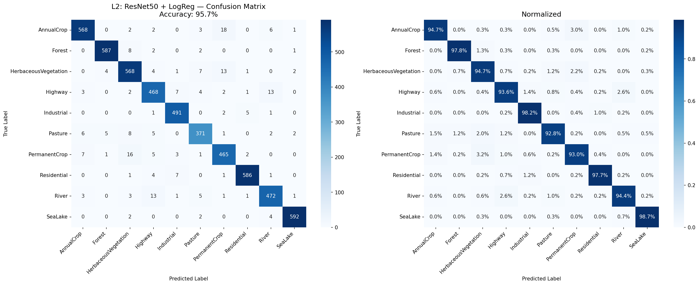
何を見るべきか: 対角線の濃さと誤分類先の集中。
何がわかるか: L1で壊滅したBuilt-up系が90%超まで回復。
L2_tsne
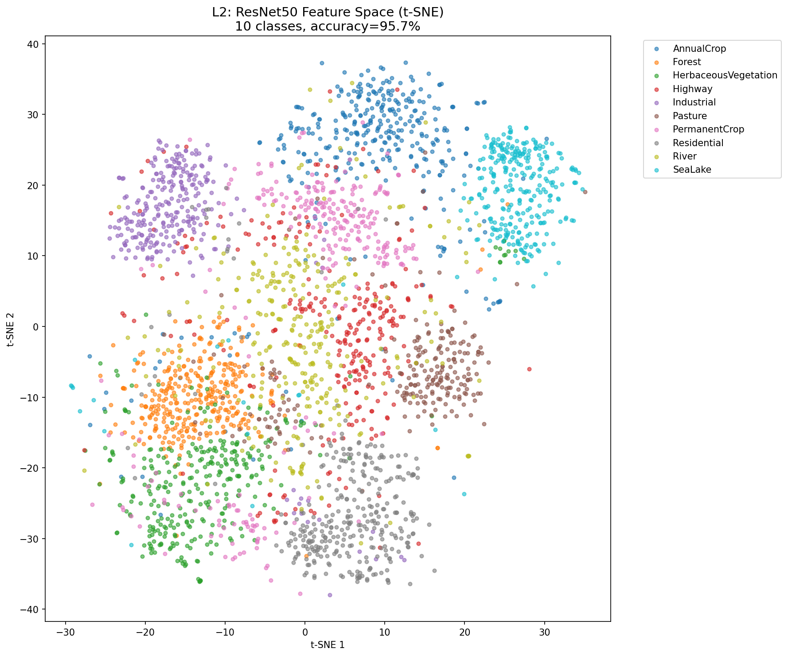
何を見るべきか: クラスごとのクラスタ分離と重なり領域。
何がわかるか: 3次元指数では見えない分離構造を2048次元特徴が形成している。
L2_per_class_accuracy
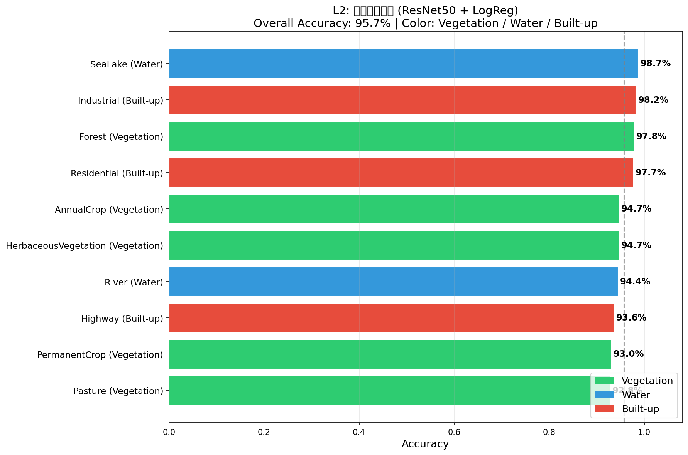
何を見るべきか: クラス間ばらつき（最低Pasture〜最高SeaLake）。
何がわかるか: 全クラス92%以上で大崩れがない。
L2_predictions
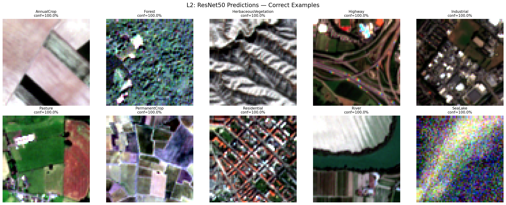
何を見るべきか: 高確信度・低確信度の正解サンプル。
何がわかるか: 『当てたけど迷った画像』がどのタイプか把握できる。
L2_correct_vs_misclassified
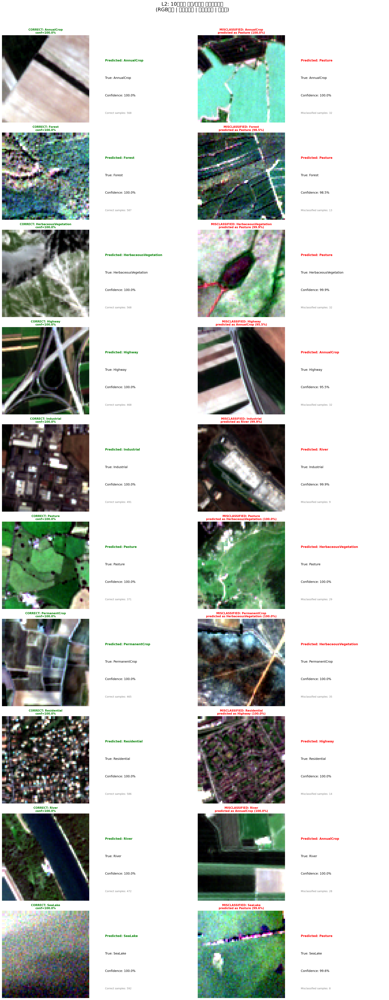
何を見るべきか: 各クラスの正解例と誤分類例の差。
何がわかるか: 誤分類が似たクラス間で起きることを視覚確認できる。
L2_hard_samples
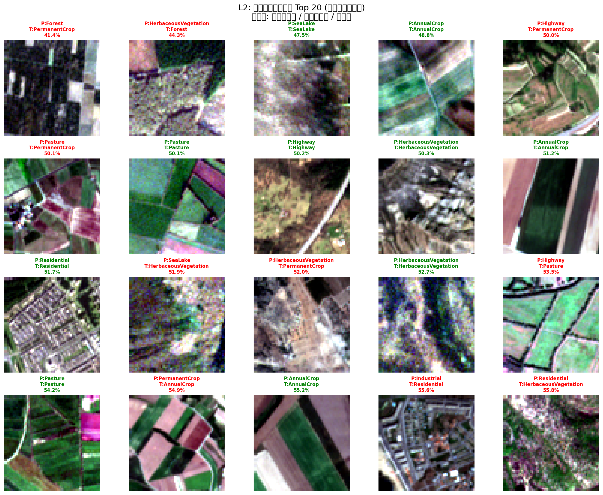
何を見るべきか: 低確信度サンプルの見た目。
何がわかるか: モデル限界は境界サンプルに集中している。
L1→L2で +31%pt ジャンプした理由
- L1:
NDVI/NDWI/NDBIの 3次元平均値で判定 - L2: ResNet50の 2048次元特徴で判定
この「3次元→2048次元」の表現力の跳躍により、平均値では消える空間パターン（道路の直線、住宅地の格子、河川の蛇行）を識別できるようになった。
Task 1-3: L3 Fine-tuning
概要: ResNet50の全層を衛星画像で再学習（ファインチューニング）し、L2の凍結特徴からドメイン適応へ移行。
結果: Full FT 10クラス 98.5%、3クラス 99.6%
L2との違い
| 項目 | L2（特徴抽出） | L3（FT） |
|---|---|---|
| バックボーン | 凍結 | 更新 |
| 学習対象 | 分類器のみ | 全層（またはヘッド） |
| 計算負荷 | 低 | 高 |
| 期待効果 | 即効で高精度 | ドメイン最適化 |
3実験の詳細
| 実験 | 学習対象 | 10クラス精度 |
|---|---|---|
| Head Only | FC層のみ | 92.4% |
| Full FT | 全23.5Mパラメータ | 98.5% |
| 50% Data FT | 全23.5M（データ半分） | 98.0% |
学習設定の解説
- エポック: 全学習データ1周。10エポック = 21,600枚を10周。
- バッチサイズ64: 21,600枚を337バッチに分割。更新回数は
337×10=3,370。 - Adam: 勢いを考慮してパラメータ更新する最適化手法。
- CosineAnnealing: 前半は大きく、後半は小さく学習率を下げる。
- データ拡張: 回転・反転で擬似データを増やして汎化を改善。
- 正規化:
(値-平均)/標準偏差でスケールを揃える（偏差値と同じ原理）。
コードで何をやったか（要約）
展開する⌄
# === Head Only（FC層のみ学習） ===
model = models.resnet50(weights=ResNet50_Weights.IMAGENET1K_V1)
for param in model.parameters():
param.requires_grad = False # 全層凍結
model.fc = nn.Linear(2048, 10) # 最終層だけ差し替え
optimizer = optim.Adam(model.fc.parameters(), lr=1e-3)
criterion = nn.CrossEntropyLoss()
# === Full Fine-tuning（全層学習） ===
model = models.resnet50(weights=ResNet50_Weights.IMAGENET1K_V1)
model.fc = nn.Linear(2048, 10) # 最終層差し替え
# 全パラメータが requires_grad=True（デフォルト）
optimizer = optim.Adam(model.parameters(), lr=1e-4)
scheduler = CosineAnnealingLR(optimizer, T_max=10)
# === 学習ループ（共通） ===
for epoch in range(10):
model.train()
for images, labels in train_loader: # batch_size=64
images, labels = images.to(device), labels.to(device)
outputs = model(images)
loss = criterion(outputs, labels)
optimizer.zero_grad()
loss.backward()
optimizer.step()
scheduler.step()
# テスト評価
model.eval()
correct = sum((model(x.to(device)).argmax(1) == y.to(device)).sum()
for x, y in test_loader)
test_acc = correct / len(test_dataset)
# === データ拡張（学習時） ===
train_transform = transforms.Compose([
transforms.Resize(224),
transforms.RandomHorizontalFlip(),
transforms.RandomVerticalFlip(),
transforms.RandomRotation(15),
transforms.ToTensor(),
transforms.Normalize(mean=[0.485, 0.456, 0.406],
std=[0.229, 0.224, 0.225]),
])GPUが必要な理由
CPUは少数コアの逐次処理、GPUは数千コアの並列処理。2350万パラメータ更新を3370回繰り返すFull FTはGPU前提。
インタラクティブ学習曲線（Test Accuracy）
結果テーブル + 分類レポート（Full FT）
| 手法 | 3クラス精度 | 10クラス精度 |
|---|---|---|
| L1 | 64.4% | N/A |
| L2 | 98.1% | 95.7% |
| L3 Full FT | 99.6% | 98.5% |
| クラス | Precision | Recall | F1 |
|---|---|---|---|
| AnnualCrop | 0.967 | 0.977 | 0.972 |
| Forest | 1.000 | 0.990 | 0.995 |
| HerbaceousVegetation | 0.972 | 0.985 | 0.978 |
| Highway | 0.986 | 0.990 | 0.988 |
| Industrial | 0.986 | 0.994 | 0.990 |
| Pasture | 0.987 | 0.963 | 0.975 |
| PermanentCrop | 0.966 | 0.970 | 0.968 |
| Residential | 0.998 | 0.990 | 0.994 |
| River | 0.992 | 0.988 | 0.990 |
| SeaLake | 0.992 | 0.993 | 0.993 |
L3_learning_curves
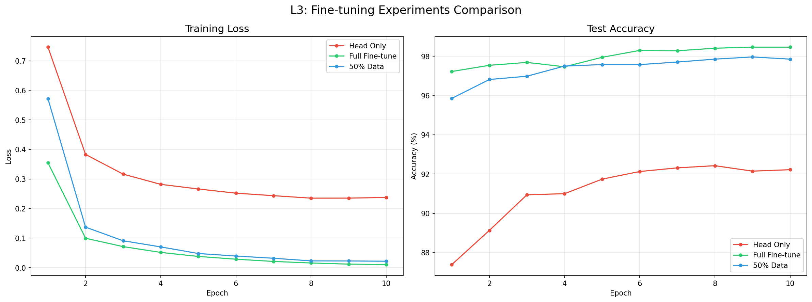
何を見るべきか: 収束速度の差
何がわかるか: Full FTは初期から高精度で飽和。
L3_confusion_matrix
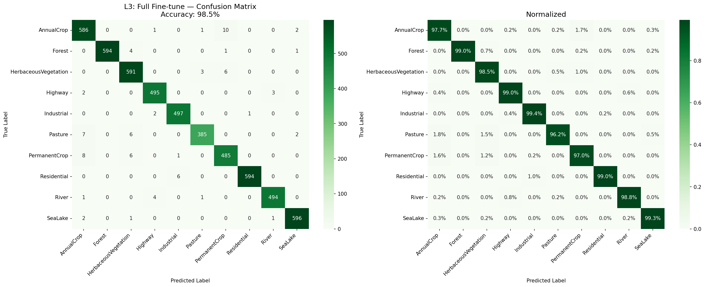
何を見るべきか: 対角線集中
何がわかるか: 全クラスで高い再現率。
L3_per_class_accuracy
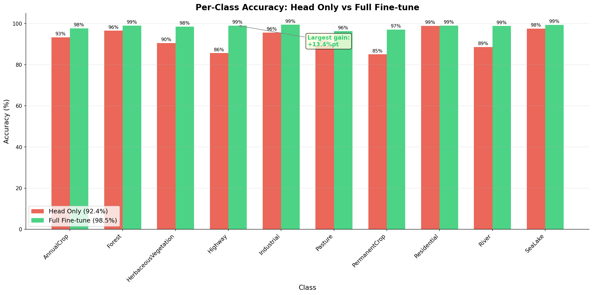
何を見るべきか: Head vs Fullの差
何がわかるか: 全層更新の改善幅をクラス別に把握できる。
L3_confusion_diff
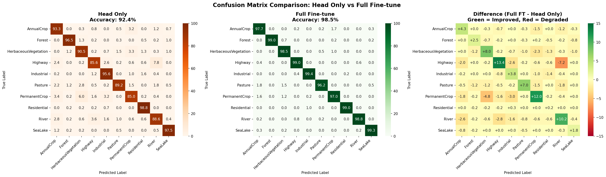
何を見るべきか: 差分ヒートマップ
何がわかるか: どの誤分類ペアが減ったかが見える。
L3_correct_vs_incorrect
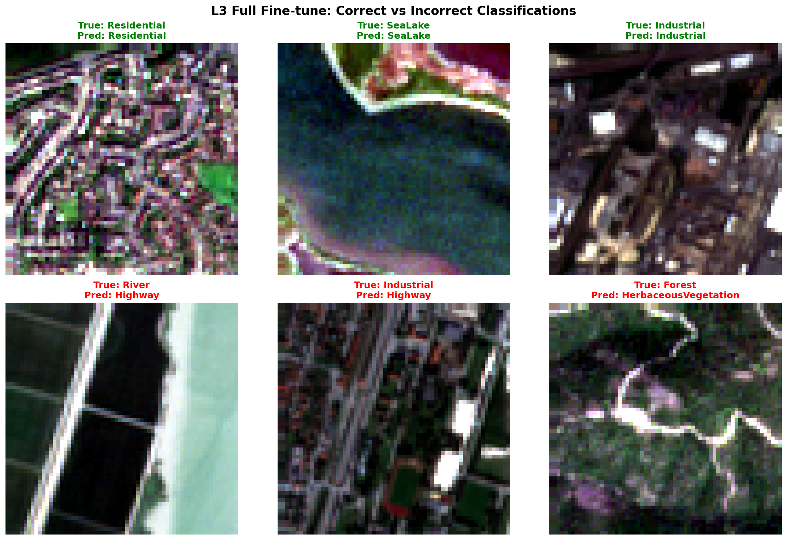
何を見るべきか: 誤分類サンプルの質
何がわかるか: 残存エラーは人間にも難しい境界事例。
学習曲線の読み方
最初の1〜3エポックで急改善し、その後は緩やかに収束。典型的な収穫逓減パターン。
なぜ Head Only (92.4%) < L2 (95.7%) か
- L2は全データを一括で使うロジスティック回帰最適化（大域的に解きやすい）。
- Head Onlyは64枚ミニバッチ更新で局所的・反復的に最適化。
- NN向け汎用オプティマイザは、2万パラメータの線形分類には過剰で非効率になることがある。
Task 1-4: L1 vs L2 vs L3 比較
概要: L1/L2/L3の結果を横並びで比較し、「どこで何がどれだけ改善したか」を定量・定性の両面で評価。
精度比較（5手法）
| 手法 | 3クラス精度 | 10クラス精度 | 改善幅 |
|---|---|---|---|
| L1: NDVI/NDWI/NDBI Threshold | 64.4% | N/A | - |
| L2: ResNet50 + LogReg | 98.1% | 95.7% | +31.3pt (vs L1) |
| L3: FT Head Only | - | 92.4% | -3.3pt (vs L2) |
| L3: FT Full (100% data) | 99.6% | 98.5% | +2.8pt (vs L2) |
| L3: FT Full (50% data) | - | 98.0% | +2.3pt (vs L2) |
コードで何をやったか（要約）
展開する⌄
# === L1/L2/L3 の結果を読み込んで比較 ===
l1 = np.load('L1_results.npz', allow_pickle=True)
l2 = np.load('L2_results.npz', allow_pickle=True)
l3 = np.load('L3_results.npz', allow_pickle=True)
# 精度テーブル作成
results = {
'L1': {'3class': l1['accuracy'], '10class': None},
'L2': {'3class': l2['accuracy_3class'], '10class': l2['accuracy_10class']},
'L3_head': {'10class': l3['accuracy_10class_head']},
'L3_full': {'3class': l3['accuracy_3class'], '10class': l3['accuracy_10class_full']},
'L3_half': {'10class': l3['accuracy_10class_half']},
}
# 混同行列の比較（L2 vs L3）
from sklearn.metrics import confusion_matrix, classification_report
cm_l2 = confusion_matrix(y_test, l2['predictions'])
cm_l3 = confusion_matrix(y_test, l3['predictions_full'])
# クラス別F1スコアでレーダーチャート
report_l2 = classification_report(y_test, l2['predictions'], output_dict=True)
report_l3 = classification_report(y_test, l3['predictions_full'], output_dict=True)
# 同一画像での予測比較
for idx in sample_indices:
print(f"True: {class_names[y_test[idx]]}")
print(f" L1: {l1_pred_3class[idx]}")
print(f" L2: {class_names[l2['predictions'][idx]]}")
print(f" L3: {class_names[l3['predictions_full'][idx]]}")5つの主要な発見
- L1→L2 が最大のジャンプ（+31.3pt）。
- L2→L3 Full FT は +2.8pt の上積み。
- Head Only は L2未満で、凍結条件ならLogRegが強い。
- Full FTが最高精度（98.5%）。
- 学習データ50%でも98.0%（EuroSATのクリーンさを反映）。
L1_L2_L3_comparison_bar
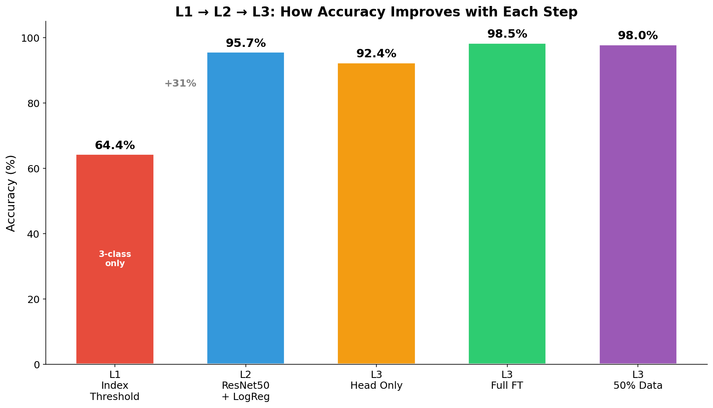
何を見るべきか: L1→L2→L3の段差
何がわかるか: 最も効く改善ステップが一目でわかる。
effort_vs_accuracy
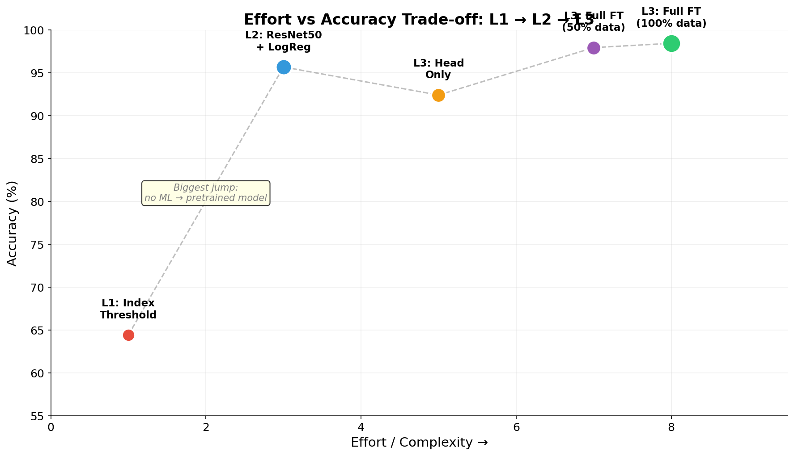
何を見るべきか: 労力と精度の位置関係
何がわかるか: 実務での投資対効果判断に直結する。
L2_vs_L3_confusion
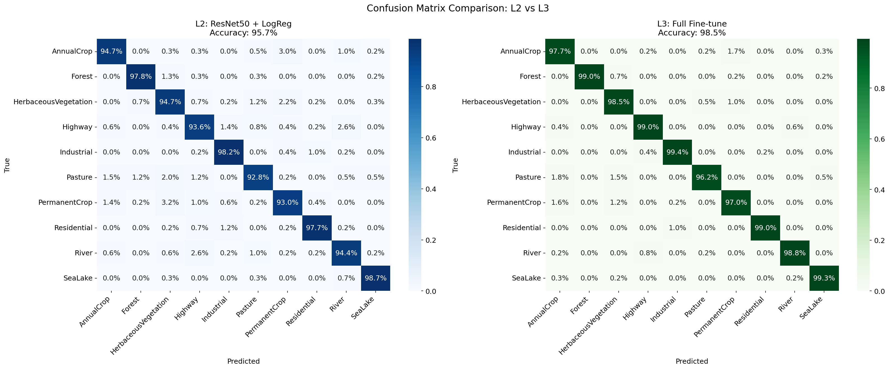
何を見るべきか: 誤分類セルの減少
何がわかるか: FTでどの混同が減ったか確認できる。
L2_vs_L3_radar
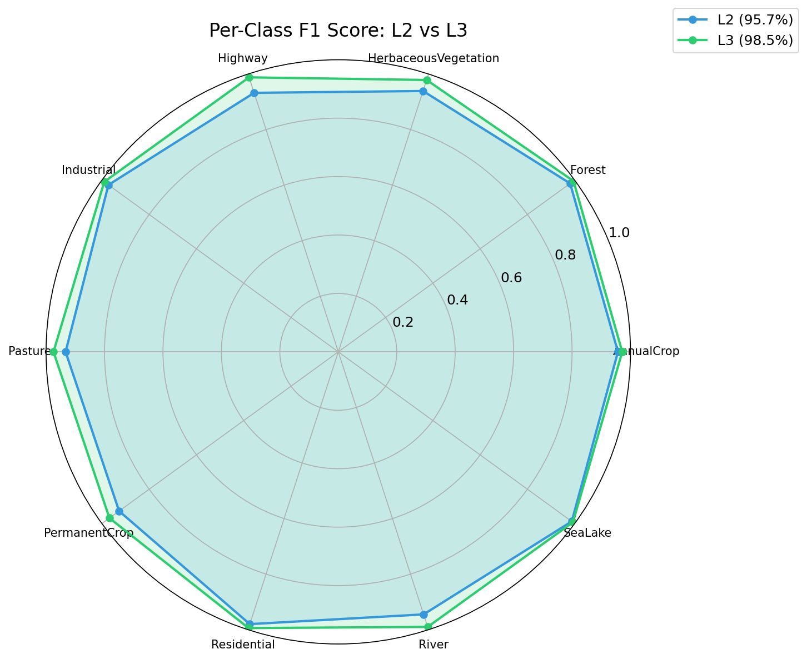
何を見るべきか: L2とL3の面積差
何がわかるか: L3が全方向で上回る傾向を把握できる。
3class_comparison
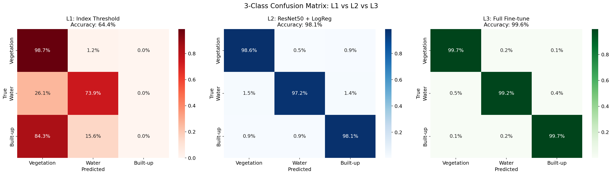
何を見るべきか: L1/L2/L3の3クラス混同行列差
何がわかるか: Built-up崩壊がL2/L3で解消したことが明確。
same_image_comparison
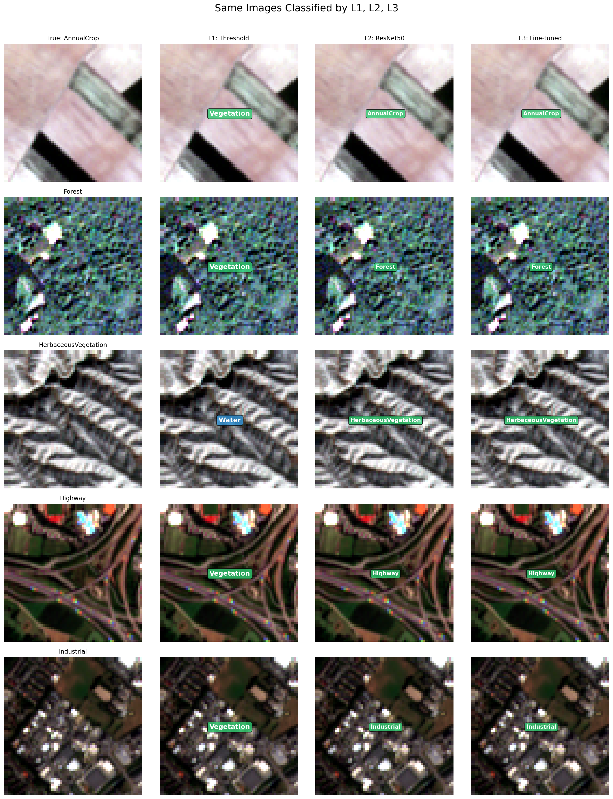
何を見るべきか: 同一画像の予測変化
何がわかるか: 手法進化に伴う予測改善を直感的に追える。
comparison_6samples_L1L2L3
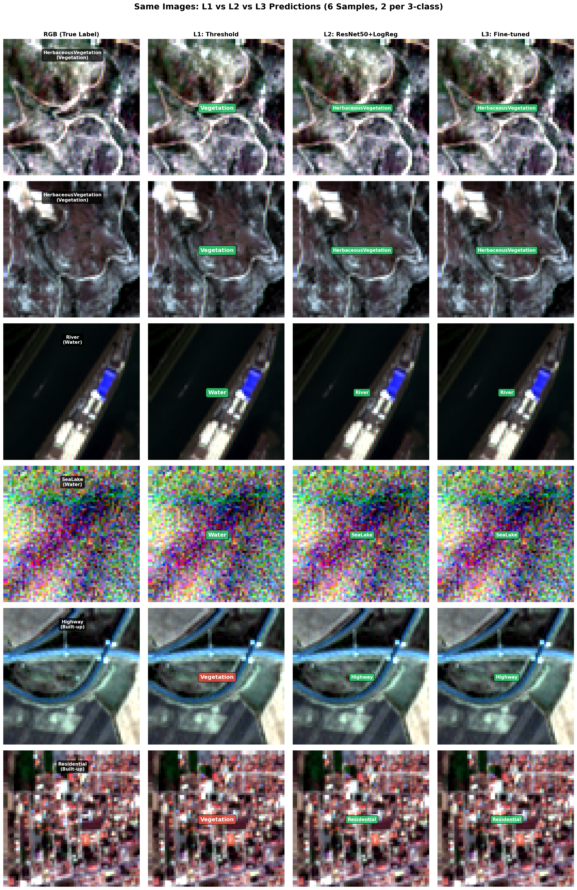
何を見るべきか: 6サンプル横並び
何がわかるか: クラス横断の改善傾向を確認できる。
comparison_improvement_map
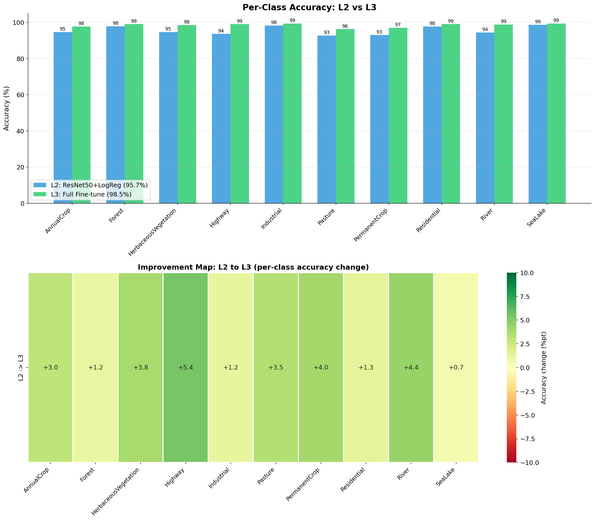
何を見るべきか: クラス別改善量
何がわかるか: FTの恩恵が大きいクラスを特定できる。
comparison_L3_failures
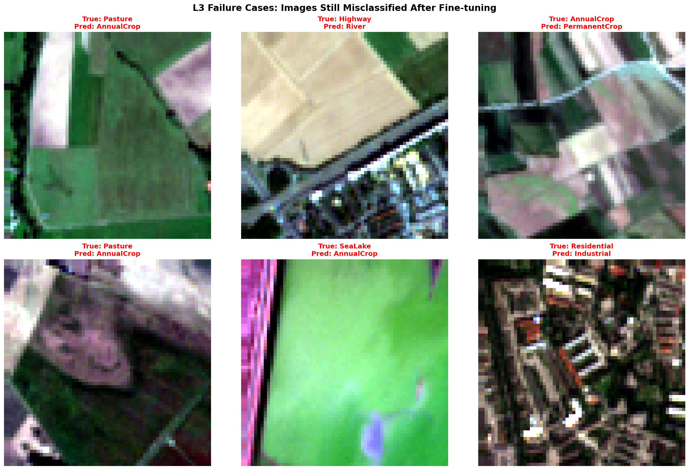
何を見るべきか: L3でも誤る画像
何がわかるか: 残課題がデータ曖昧性にあるとわかる。
comparison_L3_error_rate
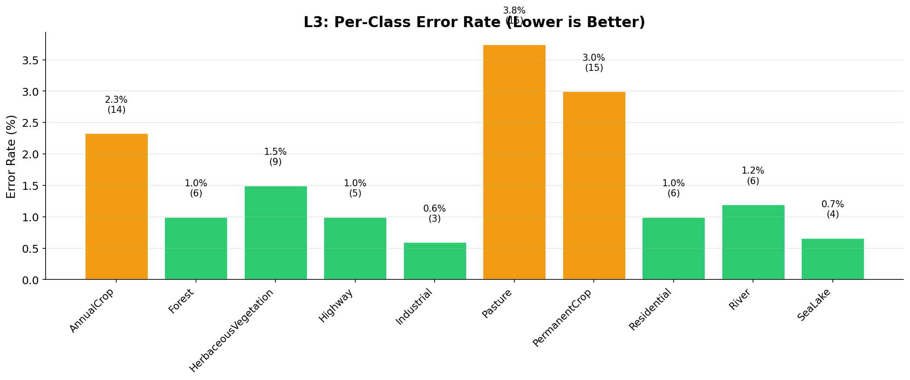
何を見るべきか: クラス別エラー率
何がわかるか: 次に改善すべきクラス優先度を決められる。
きれいなデータ vs 実務データの精度差
| データ量 | EuroSAT | 実務データ |
|---|---|---|
| 1,000枚 | 約95% | 約78% |
| 5,000枚 | 約97% | 約86% |
| 20,000枚 | 98.5% | 約91% |
ラベル作りのコスト
衛星画像自体は無料で取得可能だが、高品質ラベル作成（特にセグメンテーション）は1枚30分〜1時間の人手コストが支配的。
Task 1-5: All Models Comparison
概要: 古典ML〜DLまで全8手法を横並び比較し、モデル選定の実務判断に使える精度・コスト地図を作成。
古典ML vs DL の本質
- 古典ML: 人間が特徴量を設計し、モデルは判定だけを担当。
- DL: モデルが特徴抽出と判定を同時に学習。深い層で段階的に高次特徴を構築。
古典ML向け手作り特徴量（32次元）
| 特徴群 | 次元 | 合計 |
|---|---|---|
| 13バンド平均 | 13 | |
| 13バンド標準偏差 | 13 | |
| NDVI/NDWI/NDBI平均 | 3 | |
| NDVI/NDWI/NDBI標準偏差 | 3 | 32 |
古典ML コード（要約）
展開する⌄
# === 手作り特徴量の抽出（32次元） ===
def extract_features(images_13band):
features = []
for img in images_13band:
band_mean = img.mean(axis=(1, 2)) # 13バンドの平均
band_std = img.std(axis=(1, 2)) # 13バンドの標準偏差
ndvi = (img[7] - img[3]) / (img[7] + img[3] + 1e-8)
ndwi = (img[2] - img[7]) / (img[2] + img[7] + 1e-8)
ndbi = (img[11] - img[7]) / (img[11] + img[7] + 1e-8)
idx_feats = [ndvi.mean(), ndvi.std(), ndwi.mean(),
ndwi.std(), ndbi.mean(), ndbi.std()]
features.append(np.concatenate([band_mean, band_std, idx_feats]))
return np.array(features) # (N, 32)
X_train = extract_features(train_images_13band)
X_test = extract_features(test_images_13band)
# === Random Forest ===
from sklearn.ensemble import RandomForestClassifier
rf = RandomForestClassifier(n_estimators=200, random_state=42)
rf.fit(X_train, y_train)
print(f"RF accuracy: {rf.score(X_test, y_test):.3f}")
# === SVM (RBF kernel) ===
from sklearn.svm import SVC
from sklearn.preprocessing import StandardScaler
scaler = StandardScaler().fit(X_train)
svm = SVC(kernel='rbf', C=10, gamma='scale')
svm.fit(scaler.transform(X_train), y_train)
print(f"SVM accuracy: {svm.score(scaler.transform(X_test), y_test):.3f}")
# === k-NN ===
from sklearn.neighbors import KNeighborsClassifier
knn = KNeighborsClassifier(n_neighbors=5)
knn.fit(scaler.transform(X_train), y_train)
print(f"k-NN accuracy: {knn.score(scaler.transform(X_test), y_test):.3f}")Simple CNN コード（要約）
展開する⌄
# === Simple CNN（4層、ゼロから学習） ===
class SimpleCNN(nn.Module):
def __init__(self, num_classes=10):
super().__init__()
self.features = nn.Sequential(
nn.Conv2d(3, 32, 3, padding=1), nn.BatchNorm2d(32),
nn.ReLU(), nn.MaxPool2d(2), # 64→32
nn.Conv2d(32, 64, 3, padding=1), nn.BatchNorm2d(64),
nn.ReLU(), nn.MaxPool2d(2), # 32→16
nn.Conv2d(64, 128, 3, padding=1), nn.BatchNorm2d(128),
nn.ReLU(), nn.MaxPool2d(2), # 16→8
nn.Conv2d(128, 256, 3, padding=1), nn.BatchNorm2d(256),
nn.ReLU(), nn.AdaptiveAvgPool2d(1), # 8→1
)
self.classifier = nn.Linear(256, num_classes)
def forward(self, x):
x = self.features(x).flatten(1)
return self.classifier(x)
model = SimpleCNN(num_classes=10).to(device)
optimizer = optim.Adam(model.parameters(), lr=1e-3)
# 入力: 64×64px RGB, 10エポック学習ViT-Tiny コード（要約）
展開する⌄
# === ViT-Tiny（timmライブラリで事前学習済みモデル） ===
import timm
model = timm.create_model('vit_tiny_patch16_224',
pretrained=True, # ImageNet事前学習
num_classes=10)
model = model.to(device)
# ファインチューニング設定
optimizer = optim.AdamW(model.parameters(), lr=1e-4, weight_decay=0.01)
scheduler = CosineAnnealingLR(optimizer, T_max=10)
# 入力: 224×224px RGB, 10エポック学習
# パッチサイズ: 16×16 → 14×14 = 196パッチ
# 各パッチをトークンとしてTransformerで処理全8モデル概要
| モデル | カテゴリ | 精度 |
|---|---|---|
| L1: Index Threshold | L1 | 64.4 |
| Random Forest | Classical ML | 90.2 |
| SVM (RBF) | Classical ML | 93.8 |
| k-NN (k=5) | Classical ML | 90.3 |
| Simple CNN | Deep Learning | 94.9 |
| L2: ResNet50 + LogReg | L2 | 95.7 |
| L3: ResNet50 FT | L3 | 98.5 |
| ViT-Tiny FT | Deep Learning | 98.5 |
精度ランキング（インタラクティブ）
all_models_results.npz の実測値⌄
| モデル | 精度 | タイプ |
|---|---|---|
| Random Forest | 90.22 | Classical |
| SVM (RBF) | 93.76 | Classical |
| k-NN (k=5) | 90.28 | Classical |
| Simple CNN | 94.89 | DL |
| ViT-Tiny FT | 98.46 | DL |
all_models_comparison
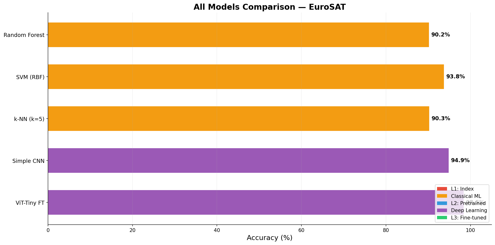
何を見るべきか: カテゴリ別の精度階段
何がわかるか: L1→Classical→DL/FT で段階的に伸びる。
all_models_ranking
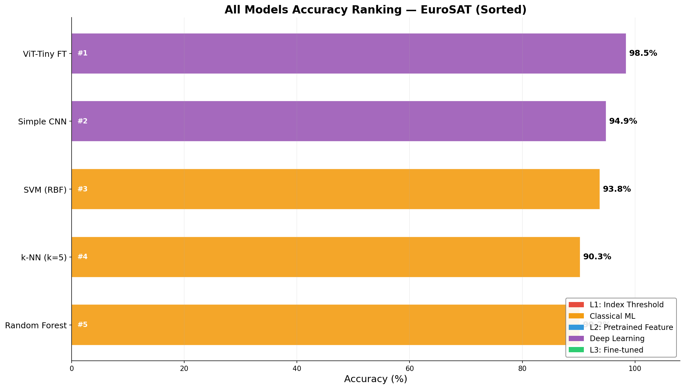
何を見るべきか: 順位の確定
何がわかるか: 最終候補モデルを短時間で絞り込める。
all_models_class_heatmap
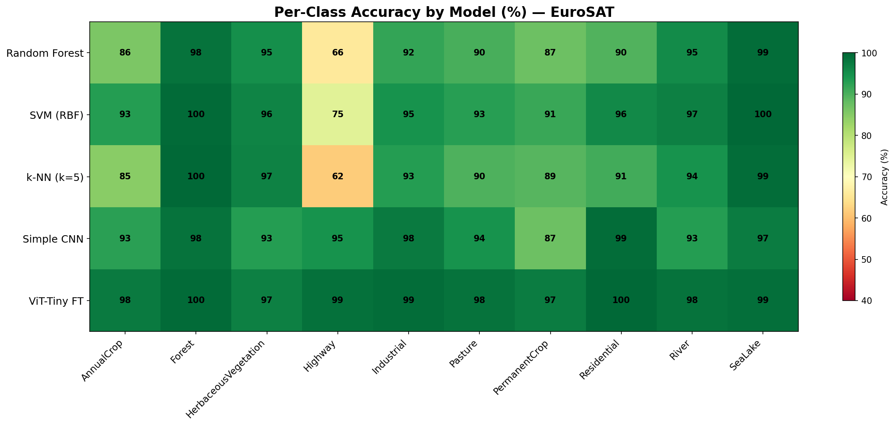
何を見るべきか: クラス別の苦手分布
何がわかるか: モデル選定時にクラス別リスクを評価できる。
all_models_cost_vs_accuracy
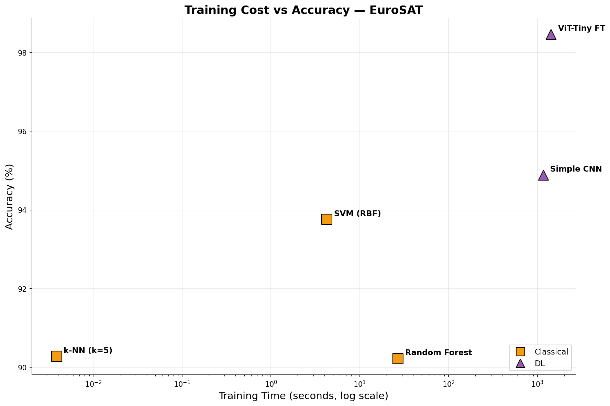
何を見るべきか: 学習時間と精度の関係
何がわかるか: 精度だけでなくコスト制約下の最適点を選べる。
事前学習 + FT が強い理由
ImageNet 120万枚で得た視覚知識を初期値にすることで、EuroSAT 27,000枚だけでは学びきれないパターンを利用できるため。
実務でのモデル選定フロー
- まずResNet50/ViTをFTしてベースライン作成
- 要件を満たせば運用へ
- 不足する場合はデータ追加・ラベル改善・衛星専用モデルへ拡張